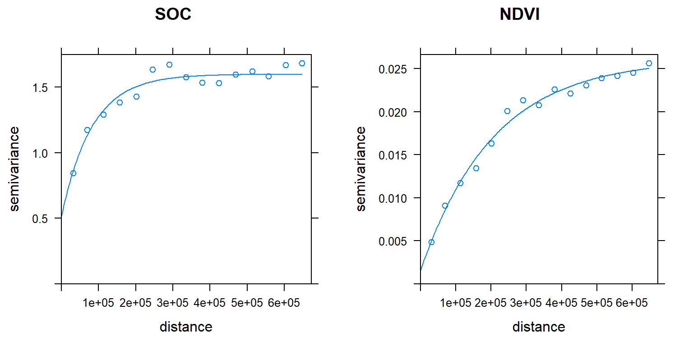
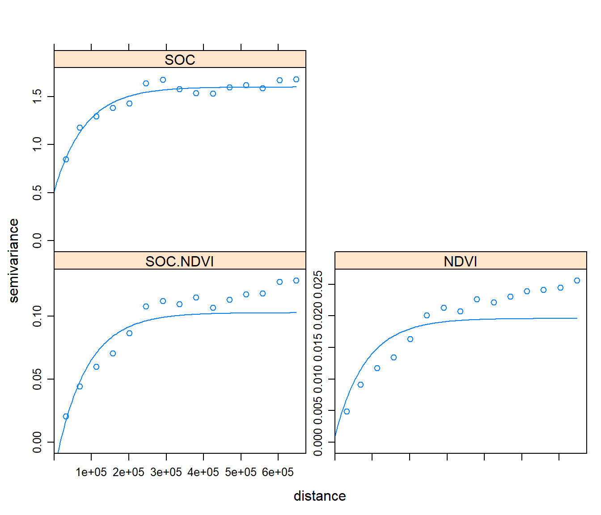

Co-Kriging
Co-kriging (CK) is an extension of ordinary kriging in which additional observed variables (know as co-variate which are often correlated with the variable of interest) are used to improve the precision of the interpolation of the variable of interest. Unlike regression and universal kriging, Co-Kriging does not require that the secondary information is available at all prediction locations. The co-variable may be measured at the same points as the target (co-located samples), at other points, or both. The most common application of co-kriging is when the co-variable is cheaper to measure than the target variable.

In this excessive first we will explore relation between SOC and other environmental co-variates such as elevation, NDVI, TPI, and then we will select one variable that would show highest relationship with SOC. This variable will be used for cokriging of SOC. The soil organic carbon data (train and test data set) that we have created before is available for download from here.
Load package
library(plyr)
library(dplyr)
library(gstat)
library(raster)
library(ggplot2)
library(car)
library(classInt)
library(RStoolbox)
library(spatstat)
library(dismo)
library(fields)
library(gridExtra)
library(Hmisc)Load Data
The soil organic carbon data (train and test data set) that we have created before is available for download here.
# Define data folder
dataFolder<-"F:\\Spatial_Data_Processing_and_Analysis_R\\Data\\DATA_08\\"train<-read.csv(paste0(dataFolder,"train_data.csv"), header= TRUE)
state<-shapefile(paste0(dataFolder,"GP_STATE.shp"))
grid<-read.csv(paste0(dataFolder, "GP_prediction_grid_data.csv"), header= TRUE) First, we will create a data.frame with SOC and continuous environmental data. Then, we will use rcorr() function of Hmisc package. We will use Box-Cox transformed SOC for correlation analysis.
Power transformation
powerTransform(train$SOC)## Estimated transformation parameter
## train$SOC
## 0.2523339SOC.bc<-bcPower(train$SOC, 0.2523339)
train$SOC.bc<-bcPower(train$SOC, 0.2523339)Correlation matrix
# create a data.frame
co.var <- train[, c(11:19)]
df.cor<-cbind(SOC.bc,co.var )
# Corelation matrix
cor.matrix <- rcorr(as.matrix(df.cor))
cor.matrix## SOC.bc ELEV Aspect Slope TPI K_Factor MAP MAT NDVI
## SOC.bc 1.00 0.11 0.05 0.35 0.05 -0.04 0.53 -0.34 0.63
## ELEV 0.11 1.00 0.22 0.71 0.00 -0.58 -0.28 -0.81 -0.06
## Aspect 0.05 0.22 1.00 0.25 0.01 -0.11 0.13 -0.22 0.10
## Slope 0.35 0.71 0.25 1.00 -0.05 -0.51 0.16 -0.66 0.32
## TPI 0.05 0.00 0.01 -0.05 1.00 -0.01 0.15 0.00 0.08
## K_Factor -0.04 -0.58 -0.11 -0.51 -0.01 1.00 0.13 0.38 -0.04
## MAP 0.53 -0.28 0.13 0.16 0.15 0.13 1.00 0.03 0.81
## MAT -0.34 -0.81 -0.22 -0.66 0.00 0.38 0.03 1.00 -0.24
## NDVI 0.63 -0.06 0.10 0.32 0.08 -0.04 0.81 -0.24 1.00
## Slit_Clay 0.29 -0.50 -0.11 -0.22 -0.01 0.60 0.46 0.28 0.32
## Slit_Clay
## SOC.bc 0.29
## ELEV -0.50
## Aspect -0.11
## Slope -0.22
## TPI -0.01
## K_Factor 0.60
## MAP 0.46
## MAT 0.28
## NDVI 0.32
## Slit_Clay 1.00
##
## n= 368
##
##
## P
## SOC.bc ELEV Aspect Slope TPI K_Factor MAP MAT NDVI
## SOC.bc 0.0396 0.3087 0.0000 0.3154 0.4435 0.0000 0.0000 0.0000
## ELEV 0.0396 0.0000 0.0000 0.9679 0.0000 0.0000 0.0000 0.2922
## Aspect 0.3087 0.0000 0.0000 0.8022 0.0381 0.0157 0.0000 0.0566
## Slope 0.0000 0.0000 0.0000 0.3112 0.0000 0.0025 0.0000 0.0000
## TPI 0.3154 0.9679 0.8022 0.3112 0.7832 0.0043 0.9946 0.1302
## K_Factor 0.4435 0.0000 0.0381 0.0000 0.7832 0.0121 0.0000 0.4041
## MAP 0.0000 0.0000 0.0157 0.0025 0.0043 0.0121 0.5909 0.0000
## MAT 0.0000 0.0000 0.0000 0.0000 0.9946 0.0000 0.5909 0.0000
## NDVI 0.0000 0.2922 0.0566 0.0000 0.1302 0.4041 0.0000 0.0000
## Slit_Clay 0.0000 0.0000 0.0304 0.0000 0.8297 0.0000 0.0000 0.0000 0.0000
## Slit_Clay
## SOC.bc 0.0000
## ELEV 0.0000
## Aspect 0.0304
## Slope 0.0000
## TPI 0.8297
## K_Factor 0.0000
## MAP 0.0000
## MAT 0.0000
## NDVI 0.0000
## Slit_ClayVariogram Modeling of co-regionalisation or Corss-Varoigram
From correlation analysis, it is observed that only NDVI shows the highest correlation with SOC (r = 0.63, p-value < 0.001), So will use NDVI for co-kriging. We first model the spatial structure of the target variable (SOC), the co-variable (NDVI) and its covariance with the target variable (SOC). This is called a co-regionalisation. It is an extension of the theory of a single regionalism variable used for ordinary kriging. The direct and cross-variograms must be modeled together, with some restrictions to ensure that the resulting CK system can be solved. Cross-variogram (per pair of regionalized variables) is calculated using following equation:

Before variogram modeling. first. we have to define x & y variables to coordinates
coordinates(train) = ~x+y
coordinates(grid) = ~x+yDirect Varoigram of Target Variables (SOC)
# Variogram
v.soc<-variogram(SOC.bc~ 1, data = train, cloud=F)
# Intial parameter set by eye esitmation
m.soc<-vgm(1.5,"Exp",400000,0.5)
# least square fit
m.f.soc<-fit.variogram(v.soc, m.soc)
p1<-plot(v.soc, pl=F, model=m.f.soc, main= "SOC")Direct Varoigram of Variogram Modeling of Co-Variables (NDVI)
# Variogram
v.ndvi<-variogram(NDVI~ 1, data = train, cloud=F)
# Intial parameter set by eye esitmation
m.ndvi<-vgm(1.5,"Exp",40000,0.5)
# least square fit
m.f.ndvi<-fit.variogram(v.ndvi, m.ndvi)
p2<-plot(v.ndvi, pl=F, model=m.f.ndvi, main="NDVI")grid.arrange(p1, p2, ncol = 2) # Multiplot 
Cross-Variogram
For modeling Cross-Varoigram, We have to fit models to both the direct and cross-variograms simultaneously with same shape and range, but may have different partial sills and nuggets.
For modeling of Cross-Varoigram in R, we have to build the gstat model sequentially, using the gstat method. First we have to build a gstat structure for target (SOC) and covariates (NDVI). Then, add we will fit variogram models to the gstat object.
g <- gstat(NULL, id = "SOC", form = SOC.bc ~ 1, data=train)
g <- gstat(g, id = "NDVI", form = NDVI ~ 1, data=train)Mow display the two direct variograms and one cross-variogram
v.cross <- variogram(g)
plot(v.cross, pl=F)
We will add variogram models to the gstat object and fit a them using the linear model of co-regionalisation. By filling all the frames with one model (using the fill.all = T argument), these conditions are automatically met.
#g <- gstat(g, id = "SOC", model = m.f.soc, fill.all=T)
g <- gstat(g, id = "SOC", model = m.f.soc, fill.all=T)
g## data:
## SOC : formula = SOC.bc`~`1 ; data dim = 368 x 22
## NDVI : formula = NDVI`~`1 ; data dim = 368 x 22
## variograms:
## model psill range
## SOC[1] Nug 0.5165078 0.00
## SOC[2] Exp 1.0817190 82362.04
## NDVI[1] Nug 0.5165078 0.00
## NDVI[2] Exp 1.0817190 82362.04
## SOC.NDVI[1] Nug 0.5165078 0.00
## SOC.NDVI[2] Exp 1.0817190 82362.04Now we fit all three variograms together, ensuring they lead to a positive definite co-kriging system. For this we use the fit.lmc method (“fit linear model of co-regionalization”). This takes the initial estimate, fits all the variograms, and then each of the partial sills is adjusted (by least squares) to the closest value that will result in a positive definite matrices.
g <- fit.lmc(v.cross, g)
g## data:
## SOC : formula = SOC.bc`~`1 ; data dim = 368 x 22
## NDVI : formula = NDVI`~`1 ; data dim = 368 x 22
## variograms:
## model psill range
## SOC[1] Nug 0.516509101 0.00
## SOC[2] Exp 1.081719638 82362.04
## NDVI[1] Nug 0.001006654 0.00
## NDVI[2] Exp 0.018584071 82362.04
## SOC.NDVI[1] Nug -0.022802328 0.00
## SOC.NDVI[2] Exp 0.125599263 82362.04plot(variogram(g), model=g$model)
Co-Kriging Prediction at grid locations
The wrapper method krige()that was used for OK can only be used for univariate kriging; here we have to use the predict() function. This takes a gstat object as the first argument and the prediction points data frame as the second argument
CK <- predict(g, grid)## Linear Model of Coregionalization found. Good.
## [using ordinary cokriging]summary(CK)## Object of class SpatialPointsDataFrame
## Coordinates:
## min max
## x -1245285 114715
## y 1003795 2533795
## Is projected: NA
## proj4string : [NA]
## Number of points: 10674
## Data attributes:
## SOC.pred SOC.var NDVI.pred NDVI.var
## Min. :-0.146 Min. :0.5951 Min. :0.1565 Min. :0.001187
## 1st Qu.: 1.170 1st Qu.:0.8408 1st Qu.:0.3090 1st Qu.:0.005756
## Median : 1.805 Median :0.9288 Median :0.4035 Median :0.007375
## Mean : 1.854 Mean :0.9461 Mean :0.4185 Mean :0.007672
## 3rd Qu.: 2.525 3rd Qu.:1.0345 3rd Qu.:0.5125 3rd Qu.:0.009305
## Max. : 4.272 Max. :1.4296 Max. :0.7758 Max. :0.016465
## cov.SOC.NDVI
## Min. :-0.02614
## 1st Qu.: 0.00624
## Median : 0.01757
## Mean : 0.01955
## 3rd Qu.: 0.03097
## Max. : 0.08082Back transformation
We will back transformation using transformation parameters that have used Box-cos transformation
k1<-1/0.2523339
CK$CK.pred <-((CK$SOC.pred *0.2523339+1)^k1)
CK$CK.var <-((CK$SOC.var *0.2523339+1)^k1)
summary(CK)## Object of class SpatialPointsDataFrame
## Coordinates:
## min max
## x -1245285 114715
## y 1003795 2533795
## Is projected: NA
## proj4string : [NA]
## Number of points: 10674
## Data attributes:
## SOC.pred SOC.var NDVI.pred NDVI.var
## Min. :-0.146 Min. :0.5951 Min. :0.1565 Min. :0.001187
## 1st Qu.: 1.170 1st Qu.:0.8408 1st Qu.:0.3090 1st Qu.:0.005756
## Median : 1.805 Median :0.9288 Median :0.4035 Median :0.007375
## Mean : 1.854 Mean :0.9461 Mean :0.4185 Mean :0.007672
## 3rd Qu.: 2.525 3rd Qu.:1.0345 3rd Qu.:0.5125 3rd Qu.:0.009305
## Max. : 4.272 Max. :1.4296 Max. :0.7758 Max. :0.016465
## cov.SOC.NDVI CK.pred CK.var
## Min. :-0.02614 Min. : 0.8617 Min. :1.741
## 1st Qu.: 0.00624 1st Qu.: 2.7875 1st Qu.:2.144
## Median : 0.01757 Median : 4.4252 Median :2.303
## Mean : 0.01955 Mean : 5.1919 Mean :2.349
## 3rd Qu.: 0.03097 3rd Qu.: 7.0556 3rd Qu.:2.507
## Max. : 0.08082 Max. :18.1452 Max. :3.390Convert to raster
CK.pred<-rasterFromXYZ(as.data.frame(CK)[, c("x", "y", "CK.pred")])
CK.var<-rasterFromXYZ(as.data.frame(CK)[, c("x", "y", "CK.var")])Plot predicted SOC and OK Error
p3<-ggR(CK.pred, geom_raster = TRUE) +
scale_fill_gradientn("", colours = c("orange", "yellow", "green", "sky blue","blue"))+
theme_bw()+
theme(axis.title.x=element_blank(),
axis.text.x=element_blank(),
axis.ticks.x=element_blank(),
axis.title.y=element_blank(),
axis.text.y=element_blank(),
axis.ticks.y=element_blank())+
ggtitle("CK Predicted SOC")+
theme(plot.title = element_text(hjust = 0.5))
p4<-ggR(CK.var, geom_raster = TRUE) +
scale_fill_gradientn("", colours = c("blue", "green","yellow", "orange"))+
theme_bw()+
theme(axis.title.x=element_blank(),
axis.text.x=element_blank(),
axis.ticks.x=element_blank(),
axis.title.y=element_blank(),
axis.text.y=element_blank(),
axis.ticks.y=element_blank())+
ggtitle("CK Predition Variance")+
theme(plot.title = element_text(hjust = 0.5))
grid.arrange(p3,p4, ncol = 2) # Multiplot 
Above plots show the interpolated map of soil SOC with associated error at each prediction grid. CK predicted map shows global pattern and hot spot locations of SOC concentration. The kriging variance is higher in unsampled locations, since variance depends on geometry of the sampling locations with lower variance near sampling locations.
rm(list = ls())